01
assist: My brother assisted me in decorating the ballroom for the upcoming event.
(trợ giúp) v

02
coordinate: The leader coordinated all employees to make sure the event ran smoothly.
(phối hợp, điều phối) v

03
dimension: The dimensions of this hotel room are 7 meters by 5 meters.
(kích thước) n

04
exact: Peter told me the exact length of the ballroom.
(chính xác) adj

05
general: The CEO gave a general description of the event.
(tổng quát) adj
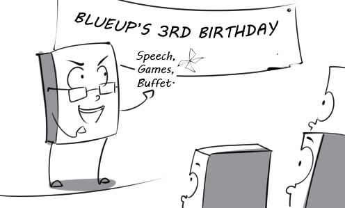
06
ideally: Ideally, there will be no rain on the day the event take place.
(lý tưởng) adv

07
lead time: He had to work fast because they gave him a little lead time to design the invitation card.
(thời gian tiến hành) n

08
plan: The director is planning carefully for the upcoming events.
(lên kế hoạch) v

09
proximity: We choose this restaurant to hold my birthday because of its proximity to my house.
(sự gần) n

10
regulate: The staff regulates the areas where guests cannot smoke at the event.
(quy định) v

11
site: Sydney Opera House would be a perfect site to hold this event.
(địa điểm) n

12
stage: The sport festival will be staged at Labor Culture Palace in Ho Chi Minh city.
(tổ chức) v
13
agent: This travel agent always has big promotion programs for customers.
(đại lý) n

14
announcement: The tour guide made an announcement about the departure time.
(thông báo) n

15
beverage: Peter hasn't decided what beverage he wants to drink yet.
(thức uống) n

16
blanket: Thanks to the soft and cozy blanket, he had a very sound sleep last night.
(chăn) n
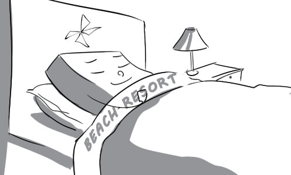
17
board: He waved goodbye to his friends and boarded the train to Nha Trang.
(lên tàu) v
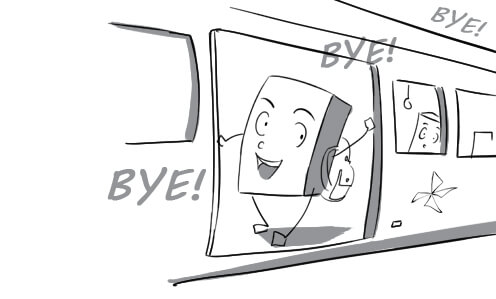
18
claim: Peter went to the Lost and Found office to claim his lost luggage.
(nhận) v

19
delay: His flight was delayed because of some technical problems.
(trì hoãn) v

20
depart: The children are eager to depart for their excursion at the countryside.
(khởi hành) v

21
embarkation: Passengers have to show the ship's crew their tickets before embarkation.
(sự cho lên tàu) n
22
itinerary: With this itinerary, I can take a vacation at the beach as well as in the mountains.
(hành trình) n
23
prohibit: Jimmy's mother prohibits him from swimming in this lake because it's very deep.
(cấm) v

24
valid: The Disneyland tickets she bought are just valid for one day.
(có hiệu lực) adj

25
deal with: This flight attendant is really good at dealing with sick passengers.
(xử trí) v

26
destination: For the French, London is an ideal tourist destination.
(điểm đến) n

27
distinguish: We can distinguish between the two airplanes thanks to their logos.
(phân biệt) v

28
economize: We decided to economize and look for the cheapest tour package.
(tiết kiệm) v
29
equivalent: The services of Vietnam Airlines are equivalent to those of Jetstar Airlines.
(tương đương) adj
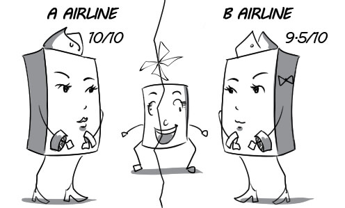
30
excursion: Mary goes to LAX airport to take an excursion to Hawaii.
(chuyến tham quan) n

31
expense: Peter was shocked with the expenses of his luxury vacation.
(phí tổn) n
32
extend: I decided to extend my stay at this hotel by another day.
(gia hạn) v

33
prospective: With their brand new airplanes, the airline hopes to attract more prospective clients.
(có triển vọng) adj

34
situation: This airline is so successful that they are always in a sold-out situation.
(tình hình) n
35
substantially: The airfares have increased substantially in tourist season.
(một cách đáng kể) adv
36
system: The pilot is very familiar with the operating system of this airplane.
(hệ thống) n
37
comprehensive: The government succeeded in developing a comprehensive national rail system.
(toàn diện) adj
38
deluxe: The deluxe coaches are more spacious and convenient than normal ones.
(sang trọng) adj

39
directory: The directory is really necessary for us when we travel by train.
(sách hướng dẫn) n

40
duration: The duration of waiting for the train was so long that I fell asleep.
(khoảng thời gian) n
41
entitle: A train ticket entitles the passenger to board the train.
(cho phép) v

42
fare: Peter went to the ticket office to pay his fare and get a ticket.
(tiền vé) n
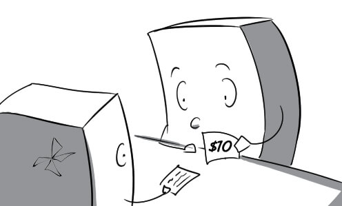
43
offset: The high cost of the hotel room was offset by the low price of food.
(bù lại) v
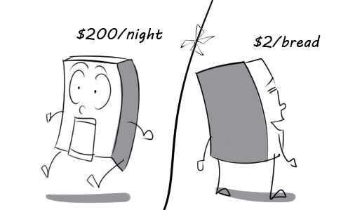
44
operate: The train operates punctually, which makes the passengers very happy.
(hoạt động) v

45
punctually: David didn't arrive at the station punctually, so he missed his train.
(đúng giờ) adv
46
relatively: The train was relatively empty although it was the tourist season.
(tương đối) adv
47
remainder: My brother offered me the remainder of the cake when he was full.
(phần còn lại) n

48
remote: It is very dangerous to travel to remote areas.
(hẻo lánh) adj

49
advanced: This hotel is very famous for its advanced service system.
(tiên tiến) adj
50
chain: Hilton hotel chain has at least one hotel in every city of America.
(chuỗi) n
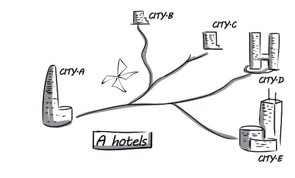
51
check in: Mr Green checked in at his hotel as soon as he arrived.
(đăng ký khi đến) v

52
confirm: The receptionist confirmed his room number again and showed him the way to his room.
(xác nhận) v

53
expect: Peter expected that his room would have a big bathtub.
(trông đợi) v

54
housekeeper: The housekeeper goes to all the rooms to make the beds.
(nhân viên dọn phòng) n
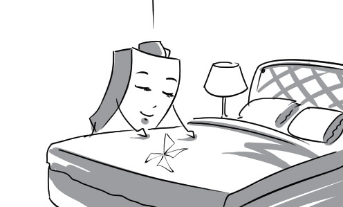
55
notify: The receptionist called to notify me that the breakfast would be ready by 7 a.m.
(thông báo) v
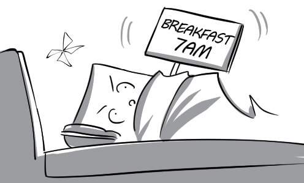
56
preclude: The flat tire precluded me from traveling any further.
(ngăn cản) v
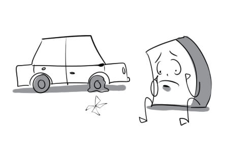
57
reservation: I called the hotel to make a reservation for my holidays.
(sự đặt chỗ trước) n

58
quote: He estimated that he would be quoted a price of $300 for a week-long stay.
(báo giá) v
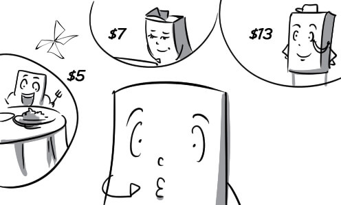
59
rate: The rate for a deluxe suite is much higher than that for a normal room.
(mức giá) n
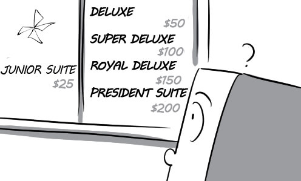
60
service: The rate for hotel laundry services is much higher than expected.
(dịch vụ) n

61
busy: Shuttle drivers are always busy in the tourist season.
(bận rộn) adj

62
coincide: Peter had his birthday timed to coincide with a holiday weekend so that all his friends could come.
(xảy ra đồng thời) v

63
confusion: They gave him a luxury car instead of a used one because of some confusion about renting the car.
(sự lẫn lộn) n
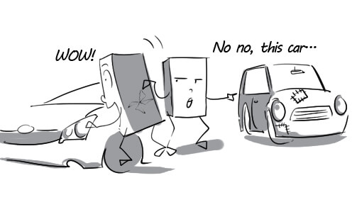
64
contact: I contacted a car rental company to rent a car for my vacation.
(liên hệ) v
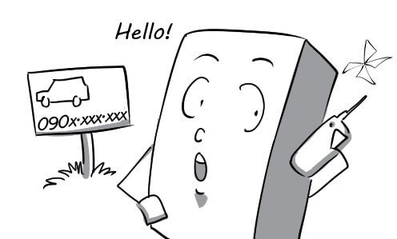
65
disappoint: David was disappointed to discover that the car he rented was very old and outdated.
(gây thất vọng) v
66
intend: Tom intended to arrive at his destination at 12 p.m.
(dự định) v
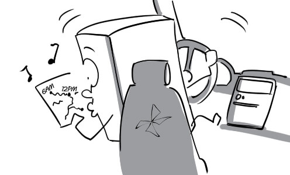
67
license: The policeman asked me to show him my driver's license.
(giấy phép) n

68
nervously: When Peter discovered that his car almost ran out of fuel, he started driving nervously.
(lo lắng) adv

69
optional: The car rental agency offered him a wide range of optional cars.
(tùy ý) adj
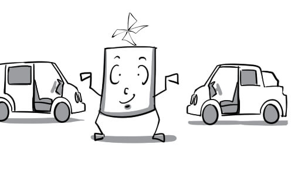
70
tempt: Ryan was tempted to rent a luxury car although he didn't have much money.
(lôi cuốn) v

71
thrill: A thrill of excitement ran through him when he was driving so fast.
(sự hưng phấn) n
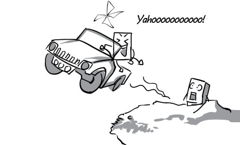
72
tier: The car rental agency had some tiers of cars for customers to choose.
(hạng) n
73
attainment: The attainment of an international award made the actor much more famous.
(thành tựu) n

74
combine: The director combined many spectacular effects to produce this movie.
(kết hợp) v
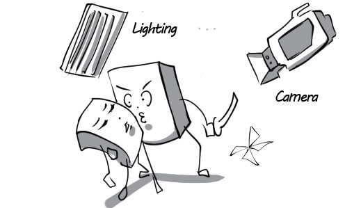
75
continue: He continued watching the movie although his wife was so sleepy.
(tiếp tục) v

76
description: His description of the action film made me want to watch it so much.
(sự mô tả) n
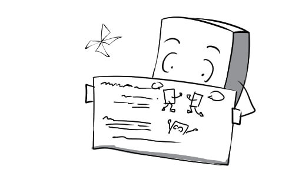
77
disperse: The crowd dispersed when a bad singer started singing.
(giải tán) v

78
entertainment: For me, there is no entertainment better than a good action movie.
(sự giải trí) n

79
influence: This violent film negatively influenced many teenagers.
(ảnh hưởng) v

80
range: The age range of people who can watch this film is above 18 years old.
(phạm vi) n
81
release: This film will be released soon, so we don't have to wait too long.
(phát hành) v

82
representation: The audience was amazed with the actor's representation of his character.
(sự miêu tả) n
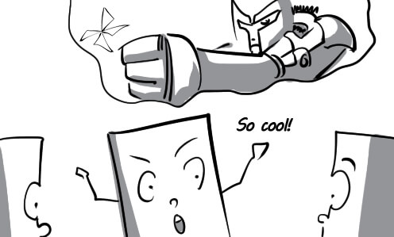
83
separately: My friend and I had to sit separately because there was an old man sitting in the middle of the bench.
(riêng rẽ) adv

84
successive: Peter can watch successive movies on TV for hours.
(liên tiếp) adj

85
action: The action of the play is so interesting that everyone pays full attention to it.
(diễn biến) n

86
approach: Julian approaches the actress to ask for her autograph.
(tiếp cận) v

87
audience: Some of the audience found the play very touching while the others didn't.
(khán giả) n
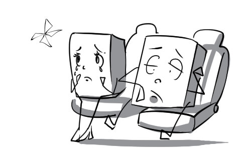
88
creative: The actor's creative representation of his character made the audience surprised.
(sáng tạo) adj

89
dialogue: Mary and Peter succeeded in performing the romantic dialogue.
(cuộc đối thoại) n

90
element: A good appearance is an essential element of an actress.
(yếu tố) n

91
experience: Live concert is an enjoyable experience for me.
(trải nghiệm) n
92
occur: A technical problem occurred in the middle of the play.
(xảy ra) v
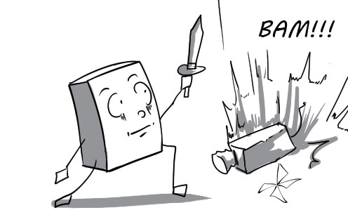
93
perform: Adele performed her song so beautifully that I had my breath taken away.
(trình diễn) v
94
rehearse: The actors rehearse once again before the play starts.
(diễn tập) v
95
review: The critic's review of the play is very positive, so I will go watch it next week.
(bài phê bình) n
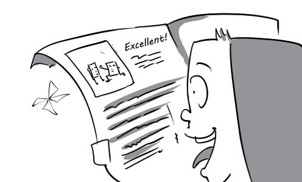
96
sell out: The play sold out so quickly thanks to the positive review of the critic.
(bán hết sạch vé) v.